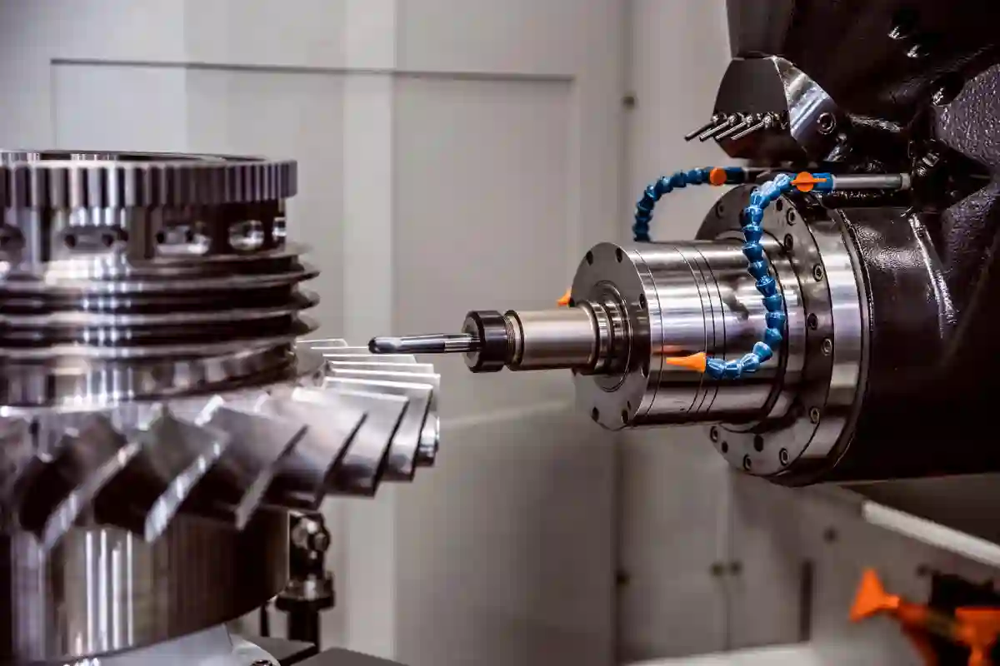

Talaşlı İmalat Teknikleri – Endüstriyel Üretimde Temel Yöntemler
Endüstriyel üretimde yüksek hassasiyet, ölçü tekrarlanabilirliği ve yüzey kalitesi gerektiren parça imalatlarında talaşlı imalat teknikleri, en güvenilir ve kontrollü üretim yaklaşımı olarak öne çıkar. Bu teknikler, ham malzeme üzerinden belirli miktarda malzemenin kaldırılması esasına dayanır ve özellikle metal işleme sektöründe kritik bir rol üstlenir. Günümüzde savunma sanayi, otomotiv, medikal ve enerji gibi yüksek toleranslı üretim gerektiren sektörlerde bu yöntemler vazgeçilmezdir.
Talaşlı imalat teknikleri, yalnızca bir üretim yöntemi değil; aynı zamanda mühendislik disiplini, proses planlama ve kalite kontrol bütünlüğüyle ele alınması gereken kapsamlı bir sistemdir. İş parçasının geometrisi, malzeme türü, tolerans gereksinimleri ve kullanım alanı; uygulanacak yöntemin seçiminde belirleyici olur. Bu noktada tornalama, frezeleme ve delik işleme gibi temel süreçler, farklı kombinasyonlarla entegre şekilde kullanılır.
Modern üretim tesislerinde manuel uygulamalar yerini büyük ölçüde cnc talaşlı imalat teknikleri temelli otomasyonlu sistemlere bırakmıştır. CNC altyapısı, hem üretim hızını artırır hem de insan kaynaklı hataları minimize eder. Ancak teknik altyapı kadar, süreci yöneten mühendislik yaklaşımı da nihai ürün kalitesini doğrudan etkiler.
Bu rehberde, talaşlı imalatın temel tekniklerini yalnızca teorik olarak değil; üretim sahasındaki gerçek uygulamalar ve mühendislik perspektifiyle ele alacağız. Her tekniğin hangi durumlarda tercih edilmesi gerektiğini, avantajlarını ve proses içindeki rolünü adım adım inceleyeceğiz.
Talaşlı İmalatın Endüstriyel Üretimdeki Yeri
Talaşlı imalat, şekillendirme, döküm veya kaynak gibi yöntemlere kıyasla daha yüksek ölçü hassasiyeti sunmasıyla bilinir. Bu nedenle fonksiyonel yüzeylerin, geçme toleranslarının ve dinamik çalışan parçaların üretiminde öncelikli tercih edilir. Talaşlı imalat teknikleri, özellikle prototipten seri üretime geçiş süreçlerinde mühendislik doğrulamasının temel dayanak noktasıdır.
Üretim sahasında talaşlı imalat, yalnızca tek bir makinede gerçekleşen bir işlem değildir. Tornalama, frezeleme, delik delme ve diş açma gibi alt süreçlerin tamamı, belirli bir üretim planı dahilinde ardışık veya entegre şekilde yürütülür. Bu planlama, zaman yönetimi kadar takım ömrü, yüzey kalitesi ve maliyet optimizasyonu açısından da kritik öneme sahiptir.
Örneğin silindirik bir parça üretiminde ilk adım genellikle tornalama olurken, bağlantı yüzeyleri için frezeleme devreye girer. Delik hassasiyeti gerektiren durumlarda ise raybalama veya kılavuz çekme gibi ikincil işlemler uygulanır. Bu bütünsel yaklaşım, cnc talaşlı imalat teknikleri ile çok daha kontrollü ve izlenebilir hale gelir.
Talaşlı İmalat Tekniklerinin Sınıflandırılması
Geleneksel Talaşlı İmalat Yöntemleri
Geleneksel talaşlı imalat yöntemleri, operatör deneyiminin ön planda olduğu manuel tezgâhlar üzerinden yürütülür. Torna tezgâhları, freze makineleri ve matkap presleri bu sınıfın temel ekipmanlarıdır. Bu yöntemler, düşük adetli üretimlerde ve özel uygulamalarda hâlâ geçerliliğini korur.
Ancak manuel sistemlerde ölçü tekrarlanabilirliği ve süreç standardizasyonu sınırlıdır. Bu nedenle karmaşık geometrilere sahip parçalarda hata payı artabilir. Yine de temel prensiplerin anlaşılması açısından bu yöntemler, talaşlı imalat teknikleri eğitiminin temelini oluşturur.
CNC Tabanlı Talaşlı İmalat Yaklaşımı
CNC sistemler, bilgisayar kontrollü hareket kabiliyeti sayesinde çok eksenli ve yüksek hassasiyetli üretim imkânı sunar. Programlanabilir yapı, aynı parçanın binlerce kez aynı toleranslarda üretilebilmesini sağlar. Bu durum, özellikle seri üretim ve kritik tolerans gerektiren sektörler için vazgeçilmezdir.
CNC talaşlı imalat teknikleri, yalnızca makine kabiliyeti değil; CAM yazılımları, takım seçimi ve kesme parametrelerinin doğru belirlenmesiyle anlam kazanır. Üretim kalitesi, yazılım ve donanım entegrasyonunun başarısına doğrudan bağlıdır.
Tornalama Tekniği ile Silindirik Parça Üretimi

Tornalama tekniği, talaşlı imalat süreçleri içerisinde en yaygın kullanılan yöntemlerden biridir. Temel prensip, iş parçasının kendi ekseni etrafında dönmesi ve kesici takımın doğrusal veya açısal hareketlerle malzemeden talaş kaldırması esasına dayanır. Bu yaklaşım özellikle silindirik, konik ve eksenel simetrili parçaların üretiminde yüksek verimlilik sağlar. Endüstride miller, burçlar, pimler ve flanşlar gibi birçok kritik parça bu yöntemle üretilir.
Talaşlı imalat teknikleri içerisinde tornalamanın öne çıkmasının temel nedeni, ölçü hassasiyetinin yüksek olması ve yüzey kalitesinin kontrollü şekilde elde edilebilmesidir. Kesme hızı, ilerleme miktarı ve talaş derinliği gibi parametreler doğru ayarlandığında, son işlem ihtiyacı minimize edilir. Bu durum hem üretim süresini kısaltır hem de maliyet avantajı sağlar.
Günümüzde manuel tornalama uygulamaları hâlâ belirli alanlarda kullanılsa da, seri üretim ve tolerans hassasiyeti gerektiren projelerde cnc talaşlı imalat teknikleri kaçınılmaz hale gelmiştir. CNC torna tezgâhları, aynı parçayı tekrar tekrar aynı tolerans aralığında üretme kabiliyeti sunarak kalite sürekliliği sağlar.
Bu noktada, tornalama sürecinin CNC altyapısı ile nasıl entegre edildiğini detaylı incelemek için
CNC Tornalama Teknolojisi Nedir? başlıklı içeriğin referans alınması, sürecin teknik boyutunu daha net anlamaya yardımcı olur.
CNC Tornalama Süreçlerinde Hassasiyet ve Tekrarlanabilirlik
CNC tornalama, iş parçasının geometrik doğruluğunu yalnızca operatör becerisine değil; programlama doğruluğuna dayandırır. Bu yaklaşım, özellikle dar toleranslı parçaların üretiminde ciddi avantaj sağlar. Tornalama tekniği, CNC sistemlerde çoklu operasyonları tek bağlamada gerçekleştirebilme yeteneği sayesinde hata riskini minimize eder.
Örneğin, bir mil parçasının dış çap tornalaması, kanal açma ve diş açma işlemleri tek program içerisinde ardışık olarak tamamlanabilir. Bu da bağlama kaynaklı eksen kaçıklıklarını ortadan kaldırır. Talaşlı imalat teknikleri açısından bakıldığında bu durum, kalite kontrol süreçlerinin daha öngörülebilir hale gelmesini sağlar.
CNC tornalama hizmetlerinin üretim altyapısına entegrasyonu ile ilgili detaylı teknik bilgi için
CNC Tornalama hizmet sayfası kapsamlı bir referans niteliği taşır.
Frezeleme Tekniği ile Karmaşık Geometrilerin İşlenmesi
Frezeleme tekniği, dönen kesici takımın iş parçası üzerinde çok eksenli hareketlerle talaş kaldırması esasına dayanır. Bu yöntem, prizmatik yüzeyler, cepler, kanallar ve karmaşık konturların işlenmesinde tercih edilir. Tornalama eksenel simetriye odaklanırken, frezeleme çok yönlü geometrik serbestlik sunar.
Talaşlı imalat teknikleri içerisinde frezeleme, özellikle tasarım özgürlüğü gerektiren projelerde kritik rol oynar. Kalıp parçaları, makine gövdeleri ve bağlantı elemanları gibi karmaşık yapılar, frezeleme olmadan üretilemez. Bu nedenle frezeleme, çoğu zaman tornalama sonrası tamamlayıcı işlem olarak konumlandırılır.
Modern üretimde manuel freze tezgâhları yerini büyük ölçüde CNC dik işleme merkezlerine bırakmıştır. CNC talaşlı imalat teknikleri kapsamında kullanılan bu makineler, üç eksenli temel yapıdan beş eksenli ileri seviye sistemlere kadar geniş bir yelpazede çözüm sunar. Frezeleme teknolojilerinin endüstriyel uygulamaları hakkında detaylı bilgi için
CNC Frezeleme Teknolojileri ve Uygulama Alanları içeriği, süreçleri teknik ve pratik yönleriyle ele almaktadır.
Dik İşleme Merkezlerinin Üretimdeki Rolü
Dik işleme merkezleri, frezeleme işlemlerinin CNC ortamında yüksek hassasiyetle gerçekleştirilmesini sağlar. Bu makinelerde kesici takım dikey eksende hareket ederken, tabla X ve Y eksenlerinde konumlanır. Bu yapı, yüzey işleme ve cep açma gibi operasyonlarda yüksek stabilite sunar.
Frezeleme tekniği, dik işleme merkezlerinde uygulandığında, takım değiştirme süreleri ve bağlama sayıları ciddi ölçüde azalır. Bu durum, üretim hızını artırırken yüzey kalitesini de olumlu yönde etkiler. Talaşlı imalat teknikleri açısından bakıldığında, dik işleme merkezleri proses sürekliliğinin temel yapı taşlarından biridir.
Bu kapsamda, frezeleme ve dik işleme altyapısının üretim süreçlerine entegrasyonu CNC Frezeleme ve Dik İşleme hizmet sayfasında detaylı olarak ele alınmaktadır.
Delik Delme İşlemi ve Tolerans Yönetimi
Delik delme işlemi, talaşlı imalat süreçlerinde en temel fakat en kritik operasyonlardan biridir. Yüzeyden belirli bir eksende malzeme kaldırılarak silindirik boşluklar oluşturulmasını esas alır. Her ne kadar basit bir işlem gibi algılansa da, delik çapı, eksen kaçıklığı ve yüzey pürüzlülüğü gibi parametreler, parçanın fonksiyonel performansını doğrudan etkiler. Bu nedenle talaşlı imalat teknikleri içinde delik delme, çoğu zaman ikincil fakat yüksek hassasiyet gerektiren bir süreçtir.
Üretim sahasında delik delme; montaj yüzeyleri, bağlantı noktaları ve akış kanalları gibi kritik bölgelerde uygulanır. Özellikle cıvata, pim ve yataklama sistemlerinin çalışabilmesi için delik ölçülerinin toleranslara uygun olması zorunludur. Bu noktada kesici takım seçimi, kesme hızı ve ilerleme miktarı doğru planlanmadığında, istenmeyen çap büyümeleri veya koniklik problemleri ortaya çıkabilir.
Modern üretimde cnc talaşlı imalat teknikleri, delik delme işlemini manuel hatalardan arındırarak ölçü tekrarlanabilirliğini garanti altına alır. CNC tezgâhlar sayesinde delik konumları mikron seviyesinde hassasiyetle işlenebilir ve çoklu delik operasyonları tek bağlamada tamamlanabilir. Bu durum hem kaliteyi artırır hem de proses sürelerini kısaltır.
Delik Delme Operasyonlarında Takım ve Parametre Seçimi
Delik delme işleminin başarısı büyük ölçüde kullanılan matkap tipine bağlıdır. HSS, karbür veya kaplamalı matkaplar; işlenecek malzemenin sertliğine ve ısı davranışına göre tercih edilir. Yanlış takım seçimi, delik ağızlarında çapaklanmaya ve yüzey bozulmalarına neden olabilir. Bu tür hatalar, sonraki işlemlerde ilave düzeltme ihtiyacı doğurur.
Talaşlı imalat teknikleri açısından değerlendirildiğinde, delik delme genellikle tek başına yeterli olmaz. Hassasiyet gerektiren uygulamalarda, delik sonrası ilave işlemlerle tolerans iyileştirilir. İşte bu noktada raybalama devreye girer.
Raybalama İşlemi ile Hassas Delik Yüzeyleri
Raybalama işlemi, delik delme sonrasında uygulanan ve deliğin çap doğruluğunu ile yüzey kalitesini artırmayı amaçlayan bir talaş kaldırma yöntemidir. Bu işlemde, delikten çok küçük miktarda malzeme kaldırılarak, delik çapı nihai tolerans değerine getirilir. Özellikle rulman yatakları, hassas pim geçmeleri ve hidrolik bağlantılar gibi uygulamalarda raybalama vazgeçilmezdir.
Talaşlı imalat teknikleri içerisinde raybalama, ölçü hassasiyetinin son adımı olarak değerlendirilir. Delik delme işlemi genellikle ±0,1 mm tolerans sunarken, raybalama ile bu değer mikron seviyelerine indirilebilir. Bu da parçanın fonksiyonel uyumunu ve montaj kalitesini önemli ölçüde artırır.
CNC tezgâhlarda raybalama işlemi, sabit ilerleme ve kontrollü kesme derinliği sayesinde son derece stabil sonuçlar verir. CNC talaşlı imalat teknikleri kapsamında raybalama, otomatik takım değiştirme sistemleriyle entegre edilerek üretim akışını kesintiye uğratmadan uygulanabilir.
Raybalama ve Delik Kalitesi Arasındaki İlişki
Raybalama işleminde yüzey kalitesi, yalnızca ölçü doğruluğu değil; aynı zamanda sürtünme ve aşınma performansını da belirler. Pürüzlü yüzeyler, çalışan parçalarda erken aşınmaya yol açabilir. Bu nedenle raybalama, özellikle dinamik yük altında çalışan sistemlerde kaliteyi belirleyen temel faktörlerden biridir.
Bu noktada talaşlı imalat teknikleri, yalnızca ölçü elde etmeyi değil; yüzey davranışını da mühendislik perspektifiyle ele alır. Doğru uygulanan raybalama, parça ömrünü uzatırken bakım ihtiyacını da azaltır.
Diş Açma Yöntemleri ve Uygulama Alanları
Diş açma yöntemleri, iç ve dış dişli bağlantı elemanlarının üretiminde kullanılan temel talaşlı imalat uygulamalarıdır. Vidalar, saplamalar ve bağlantı elemanları; montajın sökülebilir ve güvenli olmasını sağlayan bu yöntemlerle üretilir. Talaşlı imalat teknikleri içinde diş açma, mekanik sistemlerin bütünlüğü açısından kritik öneme sahiptir.
Geleneksel yöntemlerde kılavuz ve pafta kullanılarak diş açma işlemi gerçekleştirilirken, modern üretimde CNC tabanlı diş frezeleme teknikleri öne çıkmaktadır. CNC yöntemler, diş profilinin daha kontrollü oluşturulmasını sağlar ve takım kırılma riskini minimize eder.
Özellikle sert malzemelerde ve hassas tolerans gerektiren uygulamalarda cnc talaşlı imalat teknikleri, diş açma işlemini daha güvenilir hale getirir. Tek bir program içerisinde farklı diş adımları ve çaplar işlenebilir, bu da üretim esnekliği sağlar.
CNC Diş Açma ile Proses Güvenliği
CNC diş açma yöntemleri, klasik kılavuz çekme işlemlerine kıyasla daha düşük kesme kuvvetleri oluşturur. Bu durum, ince cidarlı parçaların deformasyon riskini azaltır. Ayrıca takım aşınması daha kontrollü gerçekleştiği için kalite sürekliliği sağlanır.
Talaşlı imalat teknikleri kapsamında diş açma işlemi, montaj güvenliğini doğrudan etkilediğinden kalite kontrol süreçleriyle birlikte değerlendirilmelidir. Diş profilinin ölçümü ve görsel kontrolü, prosesin ayrılmaz bir parçasıdır.
Talaşlı İmalatta Proses Entegrasyonu ve Üretim Akışı
Talaşlı imalat, tekil operasyonlardan oluşan izole bir üretim faaliyeti değildir. Aksine, tornalama, frezeleme, delik delme ve diş açma gibi işlemlerin birbirini tamamladığı entegre bir süreçtir. Talaşlı imalat teknikleri, bu operasyonların doğru sırayla ve uygun bağlama stratejileriyle uygulanmasını gerektirir. Proses entegrasyonu sağlanmadığında, ölçü hataları ve zaman kayıpları kaçınılmaz hale gelir.
Üretim akışı planlanırken ilk adım genellikle referans yüzeylerin oluşturulmasıdır. Bu referanslar, sonraki tüm işlemler için geometrik doğruluğun temelini oluşturur. Örneğin bir makine parçasında önce tornalama ile ana çaplar işlenir, ardından frezeleme ile bağlantı yüzeyleri oluşturulur. Delik delme ve raybalama ise montaj toleranslarını garanti altına alan son adımlar olarak konumlandırılır.
Bu bütünsel yaklaşım, özellikle cnc talaşlı imalat teknikleri kullanıldığında maksimum verim sağlar. CNC sistemler, çoklu operasyonları tek bağlamada gerçekleştirebilme imkânı sunduğundan, bağlama kaynaklı hataları minimize eder. Böylece hem ölçü hassasiyeti artar hem de üretim süresi kısalır.
CNC Tabanlı Entegre Üretim Stratejileri
CNC tabanlı üretim stratejilerinde proses entegrasyonu yalnızca makine kabiliyetiyle sınırlı değildir. CAM yazılımları üzerinden oluşturulan takım yolları, talaş kaldırma sırasını ve kesme yüklerini optimize eder. Bu durum, takım ömrünü uzatırken yüzey kalitesini de iyileştirir. Talaşlı imalat teknikleri açısından bakıldığında, yazılım destekli planlama artık bir tercih değil zorunluluktur.
Özellikle karmaşık geometrilere sahip parçaların üretiminde, tornalama ve frezeleme operasyonları aynı parça üzerinde ardışık şekilde uygulanabilir. Bu entegrasyon, üretimde esneklik sağlarken kalite kontrol süreçlerini de sadeleştirir. Ölçüm noktaları ve referans yüzeyler önceden tanımlandığı için hatalar daha erken aşamada tespit edilir.
Bu kapsamda, talaşlı imalat süreçlerinin CNC tornalama altyapısıyla nasıl entegre edildiğini incelemek için CNC Tornalama hizmet yaklaşımı, pratik bir referans sunar.
Kalite Kontrol, Ölçüm ve İzlenebilirlik
Talaşlı imalatta kalite, yalnızca nihai ürünün ölçülmesiyle sağlanmaz. Kalite kontrol, üretimin her aşamasına entegre edilmesi gereken sistematik bir yaklaşımdır. Talaşlı imalat teknikleri, ölçü doğruluğu kadar yüzey kalitesi ve geometrik toleransların da kontrol edilmesini zorunlu kılar. Bu nedenle proses içi ölçümler, son kontrol kadar önemlidir.
Üretim sahasında kullanılan kumpas, mikrometre ve komparatör gibi manuel ölçüm ekipmanları temel kontroller için yeterli olabilir. Ancak yüksek hassasiyet gerektiren uygulamalarda CMM (Koordinat Ölçüm Makineleri) devreye girer. Bu sistemler, parçanın üç boyutlu geometrisini analiz ederek tolerans sapmalarını net şekilde ortaya koyar.
CNC talaşlı imalat teknikleri ile çalışan tesislerde ölçüm verileri dijital ortamda saklanabilir. Bu sayede izlenebilirlik sağlanır ve geriye dönük kalite analizleri yapılabilir. Özellikle seri üretim yapan firmalar için bu veri yönetimi, müşteri güveni açısından kritik bir faktördür.
Proses İçi Kontrolün Üretim Kalitesine Etkisi
Proses içi kontrol, hatalı parçaların üretim hattının ilerleyen aşamalarına geçmesini engeller. Bu yaklaşım, hem zaman hem de maliyet kayıplarını azaltır. Talaşlı imalat teknikleri kapsamında proses içi kontrol, özellikle dar toleranslı parçalarda kalite sürekliliğinin temel güvencesidir.
Örneğin frezeleme sonrası yapılan ara ölçümler, sonraki delik delme veya raybalama işlemlerinin doğruluğunu garanti altına alır. Bu entegrasyon, montaj sırasında yaşanabilecek uyumsuzlukların önüne geçer. Sonuç olarak kalite, yalnızca sonuç değil; sürecin doğal bir çıktısı haline gelir.
Üretim Altyapısı ve Uzmanlık Temelli Yaklaşım
Talaşlı imalat, yalnızca makine parkuruna yatırım yaparak sürdürülebilecek bir üretim faaliyeti değildir. Uzmanlık, deneyim ve teknik bilgi birikimi; kullanılan makineler kadar belirleyici rol oynar. Talaşlı imalat teknikleri, mühendislik altyapısı güçlü olmayan tesislerde beklenen kaliteyi sunamaz.
Uzman operatörler, takım aşınmasını, titreşimleri ve kesme davranışlarını tecrübe ile yorumlayabilir. Bu insan faktörü, özellikle özel parça üretimlerinde fark yaratır. CNC programları ne kadar doğru olursa olsun, sahadaki teknik sezgi üretim kalitesini doğrudan etkiler. Bu nedenle, talaşlı imalat hizmeti sunan firmaların yalnızca makine listesini değil; üretim yaklaşımını, kalite standartlarını ve referanslarını da şeffaf şekilde sunması gerekir.
Talaşlı İmalat Tekniklerinin Doğru Seçilmesi Neden Kritik?
Üretim sürecinde başarının temel belirleyicilerinden biri, parça geometrisine ve kullanım amacına en uygun yöntemin seçilmesidir. Talaşlı imalat teknikleri, her parça için aynı şekilde uygulanabilecek standart çözümler sunmaz. Aksine, her teknik belirli bir ihtiyaca yanıt verir ve yanlış seçim, hem kalite kaybına hem de maliyet artışına neden olabilir.
Örneğin silindirik ve eksenel simetriye sahip parçalar için tornalama tekniği ideal bir çözüm sunarken, karmaşık yüzeyler ve prizmatik geometriler söz konusu olduğunda frezeleme tekniği ön plana çıkar. Benzer şekilde, yalnızca delik oluşturmak yeterli olmadığında, delik delme işlemi sonrasında raybalama işlemi ile toleransların iyileştirilmesi gerekir. Vidalı bağlantıların güvenilirliği ise doğrudan diş açma yöntemlerinin doğruluğuna bağlıdır.
Bu noktada mühendislik bakış açısı devreye girer. Parçanın çalışacağı ortam, maruz kalacağı yükler ve montaj gereksinimleri değerlendirilmeden yapılan teknik tercihler, üretim sonrası sorunlara yol açabilir. Bu nedenle talaşlı imalat teknikleri, yalnızca makine kabiliyetiyle değil; tasarım ve kullanım senaryosu ile birlikte ele alınmalıdır.
Sektörel Uygulamalarda Talaşlı İmalat Teknikleri
Talaşlı imalat, farklı sektörlerde farklı önceliklerle uygulanır. Otomotiv sektöründe seri üretim ve ölçü tekrarlanabilirliği ön plandayken, savunma ve havacılık gibi alanlarda tolerans hassasiyeti ve izlenebilirlik kritik rol oynar. Medikal sektörde ise yüzey kalitesi ve malzeme bütünlüğü, üretim sürecinin merkezinde yer alır.
Bu sektörlerin tamamında cnc talaşlı imalat teknikleri, kalite sürekliliğini sağlamak için tercih edilir. CNC altyapısı, farklı parça tiplerinin aynı üretim hattında kontrollü şekilde işlenmesine olanak tanır. Bu esneklik, düşük adetli özel üretimlerden seri imalata kadar geniş bir üretim yelpazesi sunar.
Örneğin bir makine imalatçısı için bağlantı yüzeylerinin frezeleme ile işlenmesi yeterliyken, hidrolik sistemlerde çalışan bir parça için raybalama ile elde edilen hassas delikler vazgeçilmezdir. Bu farklılıklar, talaşlı imalat tekniklerinin sektörel ihtiyaçlara göre nasıl şekillendiğini net biçimde ortaya koyar.
Talaşlı İmalatta Stratejik Yaklaşım ve Uzun Vadeli Kazanım
Talaşlı imalatı yalnızca bir üretim faaliyeti olarak görmek, uzun vadede rekabet avantajı sağlamaz. Başarılı firmalar, bu süreci stratejik bir yatırım alanı olarak ele alır. Doğru makine parkuru, deneyimli teknik kadro ve sürdürülebilir kalite anlayışı; üretim performansını belirleyen temel unsurlardır.
Talaşlı imalat teknikleri, sürekli gelişen kesici takım teknolojileri ve yazılım altyapıları ile birlikte evrilmektedir. Bu değişime ayak uydurabilen firmalar, hem maliyetlerini kontrol altında tutar hem de müşteri beklentilerine daha hızlı yanıt verebilir. Özellikle özel parça üretiminde, teknik esneklik ve mühendislik desteği rekabetin anahtarıdır.
Uzmanlık temelli yaklaşım, yalnızca üretim kalitesini değil; müşteri güvenini de artırır. Şeffaf üretim süreçleri, ölçüm raporları ve izlenebilirlik, uzun vadeli iş birliklerinin temelini oluşturur. Bu yaklaşım, talaşlı imalat tekniklerinin yalnızca bugünü değil; geleceği de şekillendirdiğini gösterir.
Sonuç – Talaşlı İmalatta Doğru Teknik, Doğru Üretim
Talaşlı imalat, modern endüstrinin vazgeçilmez üretim disiplinlerinden biridir. Tornalama, frezeleme, delik delme, raybalama ve diş açma gibi yöntemler; doğru şekilde planlandığında yüksek hassasiyetli ve güvenilir ürünler ortaya çıkarır. Talaşlı imalat teknikleri, bu yöntemlerin rastgele değil; bilinçli ve mühendislik temelli uygulanmasını gerektirir.
Bu rehber boyunca ele alınan teknikler, üretim sahasındaki gerçek uygulamalara dayanarak değerlendirilmiştir. Amaç, yalnızca teorik bilgi sunmak değil; doğru karar alma sürecine katkı sağlamaktır. Parça gereksinimlerine uygun tekniklerin seçilmesi, kalite ve maliyet dengesinin korunmasını sağlar.
Sonuç olarak, talaşlı imalatı başarıyla uygulayan işletmeler; teknik bilgi, deneyim ve stratejik bakış açısını bir araya getirenlerdir. Bu bütünlük sağlandığında, üretim yalnızca bir süreç değil; katma değer yaratan bir yetkinlik haline gelir.